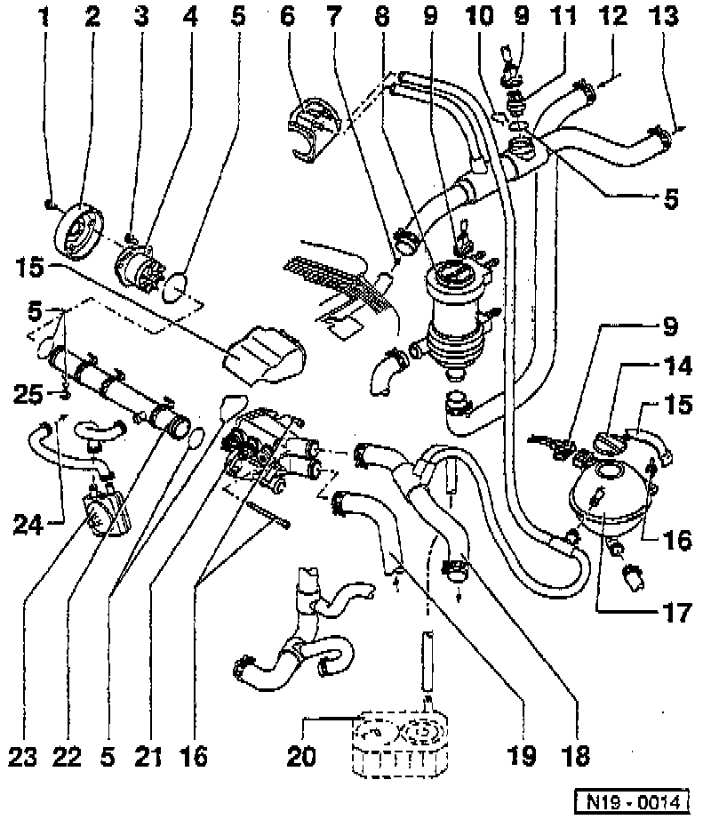

Radiator Hose: Service and Repair

LEGEND
1 Coolant (Water) Pump Pulley Bolt
2 Coolant (Water) Pump Pulley
3 Coolant (Water) Pump Bolt
4 Coolant (Water) Pump
5 O-Ring
6 Throttle Body
7 From Cylinder Head
8 Continued Coolant Circulation Pump
9 Electrical Connector
10 Retaining Clip
11 Engine Coolant Temperature (ECT) Sensor
12 From Heat Exchanger
13 To Heat Exchanger
14 Cap
15 Cover
16 Bolt/Screw
17 Expansion Tank
18 Upper Coolant Hose
19 Lower Coolant Hose
20 Automatic Transmission Fluid (ATF) Cooler
21 Thermostat Housing
22 Coolant Hose
23 Engine Oil Cooler
24 To Cylinder Block
25 Coolant Drain Screw
NOTE: During removal and installation procedures, refer to the component location illustration above and component notes below.
COMPONENT NOTES
Coolant (Water) Pump Pulley Bolt (1)
- Tighten to: 25 Nm (18 ft. lbs.).
- To loosen, use modified holding wrench tool No. VAG 1590, or equivalent.
Coolant (Water) Pump Bolt (3)
- Tighten to: 20 Nm (15 ft. lbs.).
Coolant (Water) Pump (4)
- Check shaft for ease of movement.
O-ring (5)
- Always replace.
Continued Coolant Circulation Pump (8)
- For testing, refer to After-run Coolant Pump.
- Secured with bracket to the camshaft sprocket cover.
Retaining Clip (10)
- Ensure it is seated securely.
Engine Coolant Temperature (ECT) Sensor (11)
- For Climatronic climate control system.
- Color Black.
- 2 pin connector.
Cap (14)
- Check using pressure tester tool No. VAG 1274, or equivalent.
- Test pressure: 1.3-1.5 bar (18.85-21.75 psi)
Bolt/Screw (16)
- Tighten to: 10 Nm (7 ft lbs.).
ATF Cooler (20)
Thermostat Housing (21)
- Refer to Thermostat, Engine Cooling.
Engine Oil Cooler (23)
- Refer to Engine Lubrication found in the Engine section.
Coolant Drain Screw (25)
- Tighten to: 10 Nm (7 ft. lbs.).